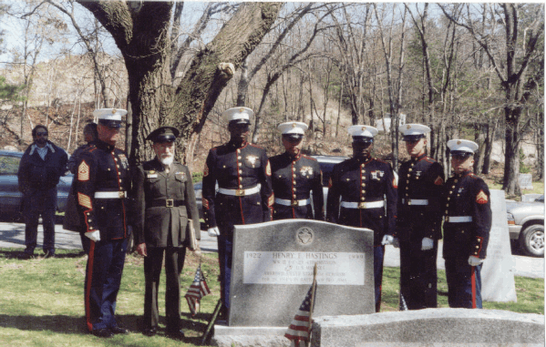
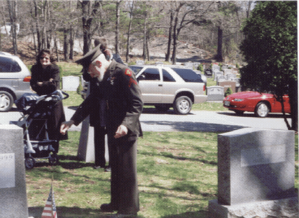

Go back
Pictures from Henry Hastings Funeral
April 10, 2000
Blue Hills Cemetary, Braintree, MA

United States Marines Honor Guard 1/25th/4th Marine Division Camp Edwards
Sergeant MajorHolland Honor Guard Commander on the left.
Orvel Johnson (in green uniform)representing Company C, 23rd Marines
Other members of the Honor Guard not identified.

Orvel Johnson spreads sand from Iwo Jima on Henry's grave.
Go back
Maintained on web site by Rowland Lewis
Last Modified 06/06/2000